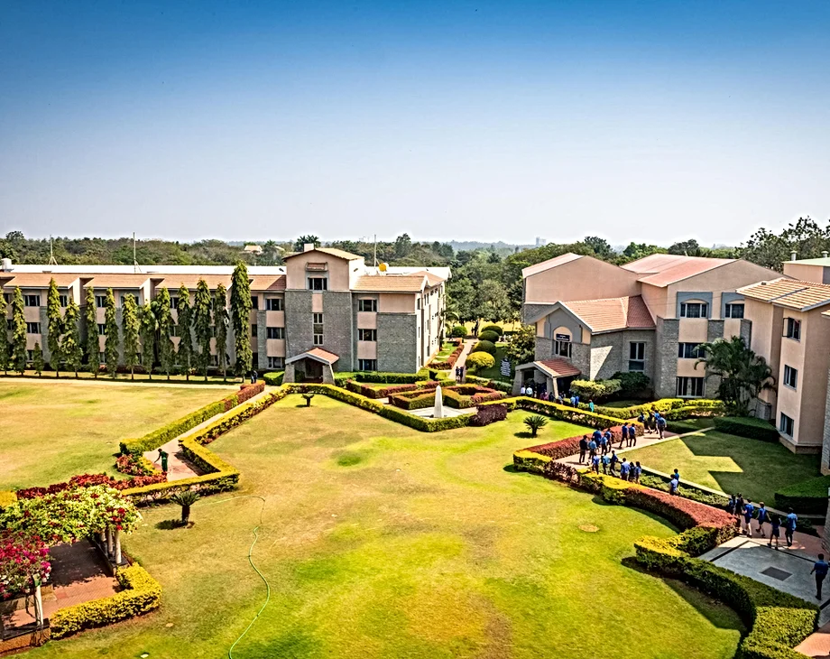

The International School Bangalore (TISB) was one of the initial international schools in the country, quickly climbing the ranks and establishing itself as one of the top international schools in the world (The Good Schools Guide, UK). As an international school, TISB stimulates intercultural relations, providing students with a platform for becoming global citizens. TISB is home to some of the best faculty, whose guidance has been critical for the culmination of academically excellent and well-rounded students. In short, a holistic approach to not only education, but life is what TISB stands for. TISB's ample facilities and teachers' persistent encouragement provide endless opportunities for students to pursue all kinds of interests.

The first edition of the TISB Debate is finally here, from 17th to 18th February online, taking the school by
storm. The TISB DEBATE Organising Committee is ecstatic to announce the first iteration of presumably many, TISB
debates.
An event established to challenge young minds in the field of debate, TISB Debate is a much-awaited
and grand conference that can be your stepping stone into the world of debate! This online conference welcomes
teams of grades 6-12 and aims to include and imbibe everybody into the world of debate, either help spark an
interest or hone previously built skills in students.
Dear debaters,
It is my absolute honor to bring to you the first edition of TISB DEBATE. TISB's previous debating endeavours have been incredible
and filled with national debaters (and a WSDC Best Speaker). Having continuously contributed to the Indian debating circuit, we
now look to contribute in another way. As one of India's top 3 schools in debate - we find it our responsibility to provide a platform
for all students to expose themselves to the unscalable realm of debate in February.
Debate has countless benefits. Not only does it test your critical thinking and argumentation skills, it also challenges you beyond
just a mental level. Communication skills - vital in this modern world - are embedded in debaters. I've been in situations where only
my negotiation, persuasion and communication helped me, and it would be wrong for me to not present an opportunity to all debaters
to similarly develop these skills. Debate builds teamwork, leadership and confidence and I hope every debater takes something
away from the conference. Remember, awards aren't as important as your own personal growth, and our organizing team will ensure
that we can provide you with the best experience possible.
I remember being a scared debater in national selections 3 years ago, wondering how my MUN background can help me. Yet, I soon noticed,
that I would have to relearn everything I knew about giving speeches. I remember iron-manning in international tournaments, gasping
for every breath at national camp and busting my brains every debate tournament I attend. It is difficult, but the sense of accomplishment
you feel when a round is over is impeccable. It is a rabbithole, it is my rabbithole, and I can't remember how long I've waited to present
this competition to you. I hope to see you all on February 17-18th, 2024, and don't forget to give your best and make sure to learn something,
regardless of the results.
Signing off (for now),
Yash Iyer
Chief Organizer
TISB DEBATE 2024

Hello and a warm welcome to all esteemed guests, enthusiastic participants, and teachers across the country and the globe.
With great joy, I am here to address you as the faculty advisor for the annual Inter School Debate Competition of The International School
Bangalore. I am privileged and humbled to assist you and the organising committee of the event in all capacities. I am eagerly looking
forward to witness this rewarding and transformative journey that you are going to experience.
Building on the grand success of various events that TISB holds over the past decade, such as Xavage and TISBMUN, which provide students
from across the country an opportunity to showcase their skills related to debating, problem-solving and critical thinking, we aim
to introduce TISB Annual Inter School Debate Competition for the first time in the history of the school. The competition will be held
online and is open for teams consisting of both middle and senior school students. The event is first of its kind and we are optimistic that
we will be able to continue with the legacy of successful student-driven events held at TISB.
Scheduled on the 17th and 18th of February 2024, TISB Annual Inter School Debate will provide you a platform to come together to learn collaboratively
and express your views on various issues that the world is being challenged with. Through thoughtful discussions, arguments, counterarguments,
and an open mind to appreciate diverse perspectives, we would surely be preparing ourselves to regard global problems with a positive
approach and come up with feasible solutions to the same.
As global citizens, we cannot ignore the challenges faced by any country. It is thus becoming crucial day-by-day for young minds to broaden
their outlook, sharpen their thoughts and attempt to bring in massive changes in the society. I strongly feel that debating is the first
step to open one's eyes into the reality to identify these challenges. Moreover, debating is an excellent way to practise quick thinking,
be a good listener and hone your communication skills. I, thus, insist all participants to embrace this opportunity to learn, grow, and
let your voices be heard.
Thank you, teachers across the globe, for incessantly encouraging your students to take up challenges, and guiding them towards their
holistic development.
I assure you that the organising committee for the TISB Annual Inter School Debate competition is diligently working to provide the best
experience, under the supervision of TISB staff. We eagerly anticipate hosting you and offering a debating experience that stands out!
Best regards,
Anubhab Chatterjee
Teacher Advisor - Inter School Debate Competition
Faculty of Economics